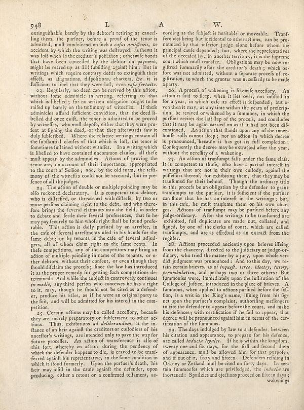

Source · scan and Parse blocks
Layers 2

Parse text by block reading order
- 0Page-header948 L A W.
- 1Textextinguishable barely by the debtor’s retiring or cancel-ling them, the purifier, before a proof of the tenor is admitted, mult condescend on fuch a _cafus amifinosis_, or accident by which the writing was delivery as there it was full here in the creditors à puffilition, otherwise bonds that have been cancelled by the debtor on payment, might be reared up as fill fulfilling against him; But in writings which require current death to extingonlift their effect, as allgations, dispositions charters, etc. It is sufficient to libel that they were left, even _cafa/ferisito_.
- 2Text23. Regularly, no deed can be served by this action, without other animals in writing, referring to that which is libelled ; for no written obligation ought to be raided up barely on the settlement of "utterls". If the admined allowful sufficient conviction, that the dead li-belled did once exit, the tenor is admitted to be proved by wineries, who mult depolo, either that they were pre-fort at fighting the died, or that they afterwards one it duly fulfilled. Where the relative writing contain all the fuiblantial claufes of that which is loft, the tenor is fomeines finland without vitrifles. Inna writing which is labelled to have counted uncommon claufs, all take mult appear by the admioles. Actions of proving the tenor are, on account of their importance, appropriate to the court of Sellon, and, by the old form, the tells many of the wineifts could not be received, but in pre- fence of all thejudges.
- 3Text24. The action of double or multiple pointing may be also reduced declaratory. It is competent to a debtor, who is differed, or threatened with difrdfs, by two or more perform claiming right to the debt, and who therefore bring the feveral claimants into the field, in order to debate and fettle their several preferences, that foe he may pay feeture o him who right shall be found prefie able. This action is daily justified by an erfree, in the cafe of feveral arreffments used in his hands for the fame debt; or by means in the cafe of Several adjuders, all of whom claim right to the fame rents. In thefe competitions, any of the competitors may bring an action of multiple-pointing in name of the tenants, or other debtors, without evercuters, or even though they should claim the proceeds, lose the law has introduced it as the proper remedy for getting both competitions determined. And while the subject in conversely common in realis, any third person who coercive he has a right to it, may, though he should not be cited as a defender, produce his titles, as if he were an original party to the hily, and will be admitted for his interentl in the competition.
- 4Text25. Certain actions may be called acceffory, because they are merely preparatory or falsleviance to other actions. Thus, exhibitions al deliberant, at the inflame of an hair again! the creditedors or culodiers of his anceller's writings, are intended only to pave the way for future profesor. An action of transferment is allo of this fort, whereby an action during the pendency of which the defender happens to die, is craved to be transferenced against his representative, in the fame condition in which it stood formally. Upon the purpose death, his her may infinit in the cause again! the defender, upon producing, either a retour or a confirmed tetlament, ac-
- 5Textcording as the fulject is heritable or movable. Transferenced being but incidental to other actions, can be pronounced by that inferior judge alone before whom the principal cause discarded, but, where the representatives of the decades live in another territory, it in the firearms court which mult transfer. Obligations may be now regilted formanly after the creditor's death ; which be fore was non admitted, without a ferrance proofs of re-pirations, to which the greater wate accordingly to be made a party.
- 6Text26. A process of wakening is likewise affecerary. An action is find to flew, when it lies over, not limited in for a year, in which cafe its effect is lafpend ; but e-von that it may, at any time within the years of preferipo, be served or wakened by a femmas, in which the purifier recites the latl leop of the process, and concludes that it may be again carried on as if it had not been diffi continued. An action that funds upon any of the interchoufe rolls cannot fleep ; nor an action in which derece is pronounced, because it has got its full completion : Confectionently the derece maybe extracted after the year, without the uncedity of a weakening
- 7Text27. An action of tranlumpe falls under the fame clais. Its compter to thief, who have a partial interest in writing that are not in their own collady, again! the pdfiffers thereof, for exhibiting them, that they may be transfumed for their behool. Though the ordinary title in this process be an obligation by the defender to grant unanfumage to the purifier, it is fulfilest if the purifier can flow that he has an intereit in the writings ; but, in this sale, he must framman them on his new charges. Action of unanfumng may be purified before any judge-ordinary. After the writings to be transfumed are exhibited, full duplicates are made out, collated, and figure, by one of the clicks of court, which we called transmpts, and acts as effoul us an extract from the register.
- 8Text28. Actions proceeded anciently upon brives lifting from the chancery, directed to the judiciary or judge-ordinary, who tried the matter by a jury, upon whole verdić judgment was pronounced. And to the day, we re- certain brievers, as of _Ingafi, trees, literary, terry, perambulation,_ and perhaps two or three others: But fummonies were, immediately upon the infiltration of the college of Jultices, introduced in the place of brives. A fummons, when applied to achon purified before the fa-fion, is a writ in the King's name, iffing from his figures upon the purifier to complain, authoring selfengers to cite the defender to appear before the courts, and make his defenses ; with certification if he fail to appear, that derece will be pronounced gain!him in terms of the certification of the dommons.
- 9Text29. The days indulged by law to a defender, between his citation and appearance, to prepare for his defense, are called _inducie legator._ I like to within the kingdom, seventy one and life days, for the lift and second diets of appearances, mult be allowed him for that purpose; and if out of its, fatty and fifteen. Defenders relating in Orkney or Zelians mult be cited on forty days. In certain fummonies which are privileged, the _inducie_ are flhortered: Spuilzies and ejections proceed on fifteen days; wakenings
Provenance page_id, checksum, Parse model
- page_id
- britannica:309f765b1ecc83e0a7f7762e44b4a927a7555443:train:2479
- sha256
- cdaf43d2433627837ca31a4db92739a8fdb6045d1d0abc637abfebf2fc448f9a
- Parse
- nvidia/nemotron-3.5-parse · finish stop